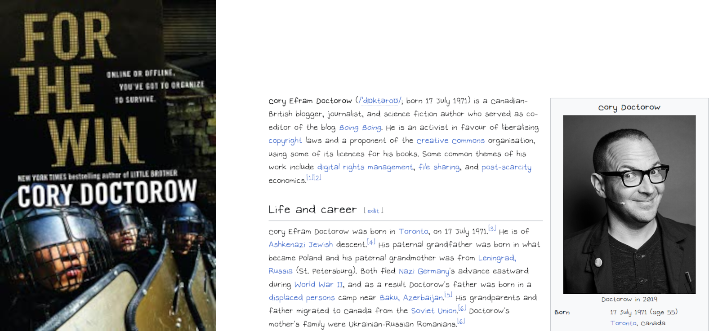

You know… I’ve been interested in digital literacy for a while now, and I wanna learn more about it, so I decided to read this novel called:
For the Winz, written by
Cory Doctorow and released in 2010. I chose this novel not only because of the digital literacy topics it contains, but also its theme. This book reflection is spoiler free, so you don’t need to worry about getting spoiled.

The novel follows the perspectives of different characters who are into online gaming for their own reasons from different countries, and tells the story about a group of digital workers (mainly people who make ends meet by playing games) combating giant companies whose are exploiting them.
One of the main digital literacy topic covered in the novel is digital privacy and surveillance. In the novel,
Boss Wing installed spyware in the internet café’s computers to spy on his workers’ activities, so he could punish them when they broke the rule. Another case of surveillance in the novel is that
Coca Cola Games Command Central hired people to come up with methods to track down the
gold farmers (people who try to farm in-game items and currencies to sell them for real world money) but unsuccessful. Even outside of the novel, online surveillance is everywhere. You can learn more about it in my
podcast.
Another major digital literacy topic covered in the novel is virtual world, as this is a book about gaming after all. It describes the virtual world in detail by showing people communicating with each other in game. As a gamer and a game developer myself, I’m basically online 24/7, so I guess I have a lot experiences about being in a virtual world. But virtual world isn’t just limited to gaming, it also includes social platforms. The rebellious group of the novel,
Industrial Workers of the World Wide Web, or just
IWWWW, had over
20000 members signed up in
6 countries, and they mostly interacted with one another via the internet. This is also an example of a virtual world.
Nowadays, as technology becomes more and more advanced, almost everyone in the world had been part of it at some point. You, who are reading this blog post right now, are also part of a virtual world. Even though we are connected more than ever, the distances between us are also longer than ever. Instead of connecting people in real life, we often opt for interacting online instead.
“Nice to meet you. Why don’t we exchange our social media accounts and chat there instead?” “I don’t have time to meet you right now… Just drop a DM…” Even as a socially awkward person whom past relationships had mostly been online, I’ve had always long for a close, 1 to 1 relationship with someone who can understand me, someone who will accept me, someone whom I can cling on, but I know that probably won’t gonna happen.
What about you, stranger? Do you feel the same way as me, or do you disagree with my view?
Overall, I’d say my experiences on reading the novel have been positive, even when I don’t like some of the languages the author used, or the never-ending jumps on different characters’ perspective. I recommend the novel to others who are rebellious(?) like me, or others who like technical things like me.